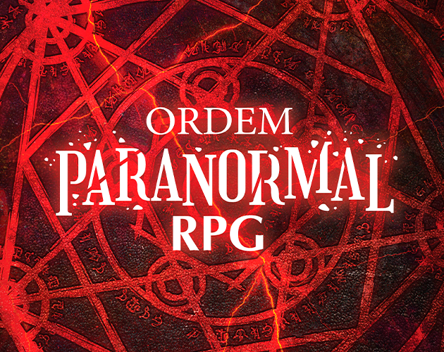

Ordem Paranormal é uma série de campanhas de RPG (Roleplaying Game) criada por Rafael "Cellbit" Lange em meados de 2019, tendo sua temporada estreia "A Ordem Paranormal".
A série tem como principal história a investigação e resolução do paranormal no mundo, onde nós vemos o ponto de vista dos agentes da Ordo Realitas combatendo o paranormal.
